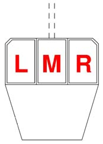
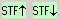
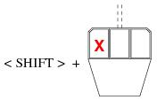

Mouse Usage |
SCORE is designed to use a two or three-button mouse. The button
commands will be referred to as L (left), M (middle), and R (right).

The primary use of the mouse is for the selection of items to edit. Click
on the item with the left button (L). When an item is selected, it will
change to red for easy identification. (However, if the item has been
"colored", its color will not change.) After selection, the item may be
dragged with the mouse to a new location on the staff. However, an
item may NOT be dragged to another staff. This must be done by
changing the value of P2 or by clicking on the move_to_ staff_ up or
down buttons

] moves down one staff. [3 moves the item three staves up, etc.
After an item has been edited, you may escape from edit mode by clicking
the right mouse button (R).
When in Edit mode, after changing any parameters, clicking the middle
button (M) performs the same function as clicking on the CC box --
that is, Copy Continue. This makes a copy of the item with the current
changes, and continues in Edit mode with the newly created item.
Limited moving of an item with the mouse and the <Shift> key.
Use the <shift> key with the left button for limited horizontal or vertical moves.

~~~~~~~~~~~~~~~~~~~~~~~~~~~~~~~~~~~~~~~~~~~~~~~~~~~
If you are NOT in edit mode, clicking the right button (R) on some
location on the screen will zoom the image to 200% with the location
when clicked moving to approximately the center of the screen.
Clicking again with the right button (R) will return the image to
the normal (100%) size.
If the <control> key is held down while pressing the left mouse button, the
entire screen image may be dragged to other positions.